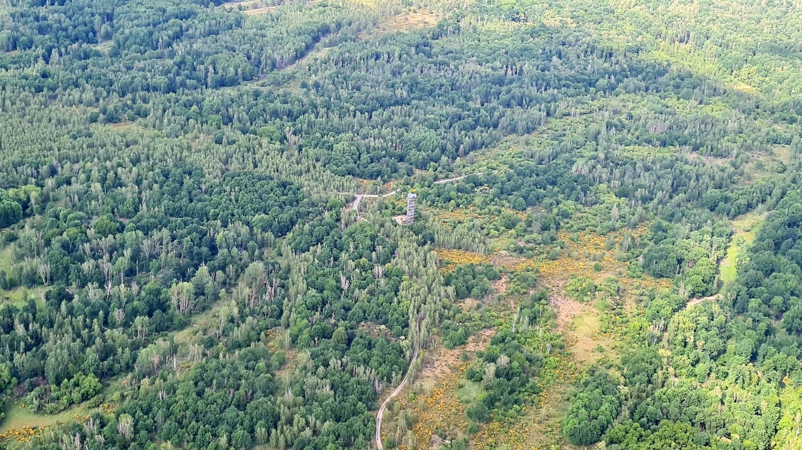
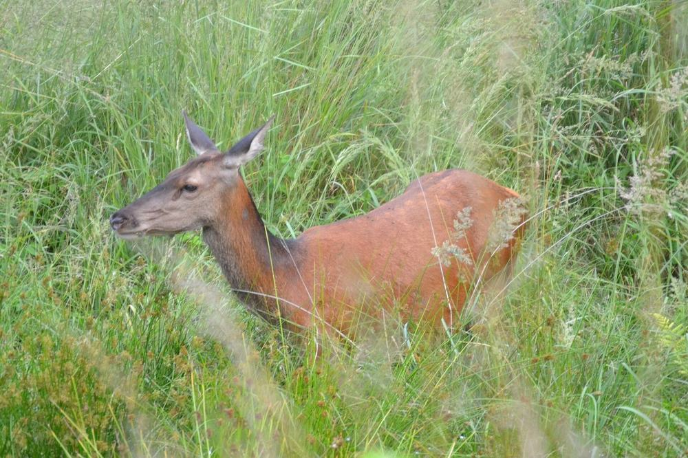
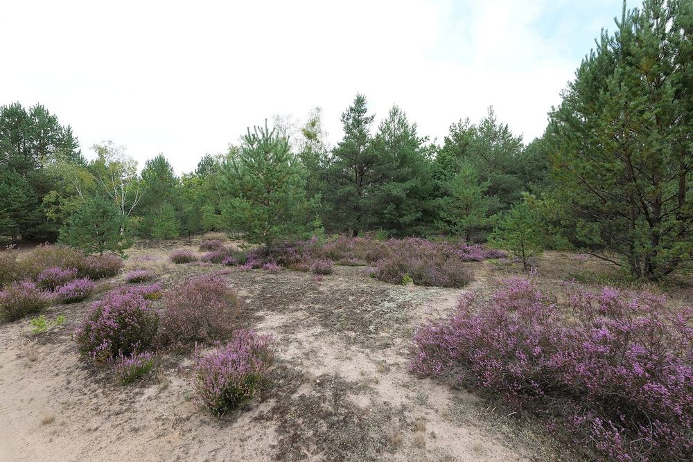

Foto: Derbrauni, CC BY 4.0, via Wikimedia Commons

Königsbrücker Heide Wilderness Area · Gohrischheide Nature Reserve
Welcome to the wilderness
For decades, the Königsbrücker Heide north of Dresden and the Gohrischheide near Riesa were military training areas. Today, nature is largely left to develop on its own. This is where you find trails, events and background information on both protected areas.
Two protected areas, one administration
-

Foto: Jonaskreische, CC BY 4.0, via Wikimedia Commons Königsbrücker Heide Wilderness Area
Around 7,000 hectares, a nature reserve since 1996 and the first protected area in Germany recognised by IUCN as a category Ib wilderness area. Page in German.
-

Symbolbild aus dem NSG Kleine Schorfheide (Brandenburg). Foto: Leonhard Lenz, CC0 1.0, via Wikimedia Commons Gohrischheide und Elbniederterrasse Zeithain Nature Reserve
Around 2,850 hectares of dry sandy heath and inland dunes between Riesa, Gröditz and Mühlberg on the Elbe. Page in German.


Please stay on the marked paths
Both areas still contain unexploded ordnance from their military past. Entering is only permitted on the marked visitor trails and on guided tours.
English example page of the demonstrator. In the project, all pages will be available in English (lot 2 of the tender).